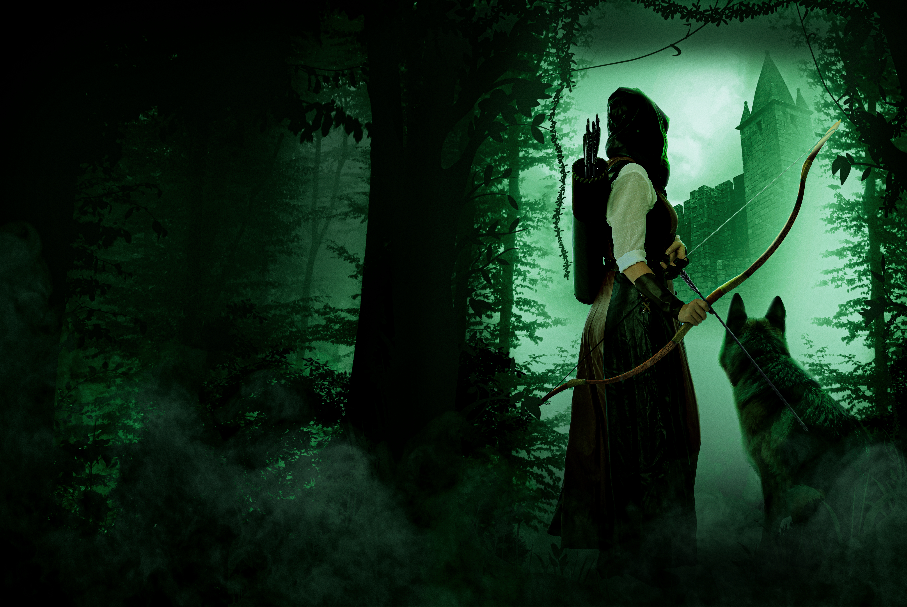

Struggling with the Names and Associations of Teloshka?
By P. S. Davis · Posted May 2026 · 14 minute read
The world of The Essence Wars is large, and so is its cast. Names carry bloodlines, regions, titles, grudges, faiths, and histories, and some of those histories are better discovered on the page rather than spoiled in a list.
This guide is meant to help readers keep track without revealing too much. It is not a full encyclopedia of Teloshka, and it does not confirm who lives, who dies, who betrays whom, or where every loyalty finally settles. Some entries use public associations rather than true allegiances, because in Teloshka, what a person appears to serve is not always the same as what they are actually doing.
Pronunciations are written as reader-friendly approximations. If you hear them slightly differently in your own head, keep them. Teloshka is large enough for regional accents.

A spoiler-light reader guide to names, regions, and public associations in Teloshka.
This is a reference guide, not a lore dump. It is designed to help you keep your footing while still leaving the sharper discoveries where they belong: inside the books.
Alphabetical Quick Jump
A
B
C
D
E
F
G
H
J
K
L
M
Q
R
S
T
V
W
X
Y
A
Admiral Norrbeck Sartise
Pronunciation: NOR-bek sar-TEES
Also known as: Sartise
City: Armekalia
Region: Aurenvia Tollitch
Public association: The Armekalian fleet and Western naval command
Note: A senior naval figure whose duty places him close to some of the West’s most dangerous sea conflicts.
Aleska
Pronunciation: ah-LES-ka
Also known as: General Aleska
City: Haithe
Region: Aurenvia Tollitch
Public association: Haithe’s military authority
Note: A commander associated with order, law, and the fragile balance between politics and force.
Allturna Vehzar
Pronunciation: al-TUR-na veh-ZAR
Also known as: Lord Allturna
City: Lenne
Region: Aurenvia Tollitch
Public association: Representative of the Lenne districts in the Order of Aurenvia Tollitch
Note: A persuasive and ambitious figure whose influence reaches deeply into Western affairs.
Amaurois
Pronunciation: ah-MAW-roys
Also known as: None commonly used
City: Citadel of Aliztar
Region: Lirioneth
Public association: Queen Aulin and the Chancellor’s household
Note: A Chancellor-appointed watcher over Queen Aulin, connected to flight, protection, and the shifting dangers surrounding the Elanwyn court.
Arlen Velthar
Pronunciation: AR-len VEL-thar
Also known as: High Steward of the Accord
City: Gusia
Region: The Gainfolds
Public association: The Council of the Eastern Accord
Note: One of the most powerful political figures in the Eastern Union, tasked with holding together a union already under strain.
Azleeya Ascellis
Pronunciation: az-LEE-ya as-SELL-is
Also known as: The Shadow
City: Near Trie
Region: Lirioneth
Public association: The Chancellor’s circle
Note: A dangerous figure associated with silence, secrecy, and precision.
Back to top
B
Braegor
Pronunciation: BRAY-gor
Also known as: Maerwyn’s warhound
City: Jonika
Region: Verdathisa
Public association: Maerwyn Sawngfli
Note: A gifted warhound of great intelligence and loyalty, often seen at Maerwyn’s side.
Brigetta Keis
Pronunciation: bri-GET-a KEEZ
Also known as: Brigetta
City: Keis’s Castle
Region: Tollitch
Public association: Representative of Keis in the Order of Aurenvia Tollitch
Note: A member of the Keis bloodline whose position places her under the pressures of inheritance, duty, and Western politics.
Brote Bruksjar
Pronunciation: BROHT bruk-SYAR
Also known as: Brote
City: Scharr
Region: The North
Public association: Deyra Fjornskara and the Northern forces
Note: A powerful northern warrior associated with Deyra’s campaigns and the hard edge of Northern resolve.
Back to top
C
Caldyr Rhaelmar
Pronunciation: KAL-deer RAY-el-mar
Also known as: Chancellor Rhaelmar, the Chancellor
City: The Citadel of Aliztar
Region: Lirioneth
Public association: Lirioneth and the Silver Assembly
Note: A dominant Eastern power-holder whose decisions shape the course of the wider conflict.
Caslyn Armond
Pronunciation: KAZ-lin AR-mond
Also known as: Lieutenant Armond
City: Jonika
Region: Verdathisa
Public association: Jonika’s civic and military order
Note: A trusted lieutenant of Sheriff Edrik Fenthos, closely tied to Jonika’s defence and internal order.
Cyre
Pronunciation: CYRE, close to "sire"
Also known as: Grantchu’s feline Lumineer
City: Haithe
Region: Aurenvia Tollitch
Public association: Grantchu Chermoine
Note: A sleek black Lumineer cat whose independence makes her both companion and mystery. Grantchu is particular about her name.
Back to top
D
Deyra Fjornskara
Pronunciation: DAY-rah fe-YORN-ska-rah
Also known as: Deyra, Winter-Marked
City/Village: Jordvann
Region: The North
Public association: The Northern forces
Note: A northern shieldmaiden whose name carries war, grief, and pride.
Dharl Bodwin
Pronunciation: DARL BOD-win
Also known as: Dharl
City: Haithe
Region: Aurenvia Tollitch
Public association: Lord Paramount Chalm of Haithe
Note: A sharp-eyed adviser and field agent of Haithe, closely associated with Lord Paramount Chalm.
Back to top
E
Edrik Fenthos
Pronunciation: ED-rik FEN-thos
Also known as: Sheriff Fenthos
City: Jonika
Region: Verdathisa
Public association: Jonika’s Regal Courthouse
Note: A civic leader whose decisions place him at the centre of Jonika’s unrest.
Emakea
Pronunciation: eh-mah-KEE-ah
Also known as: None commonly used
City: Rougsurven
Region: Northern Elanwyn
Public association: Deyra Fjornskara and the Aroxisonne villages
Note: A gifted girl whose memory makes her both vulnerable and valuable.
Erastus of Talill
Pronunciation: eh-RAS-tus of tah-LILL
Also known as: Erastus
City: Talill
Region: Aurenvia Tollitch
Public association: Representative for Talill in The Order of Aurenvia Tollitch
Note: An elderly spymaster whose age hides very little from those wise enough to fear him.
Back to top
F
Fyan Thrirlessian
Pronunciation: FY-an THRIR-less-ee-an
Also known as: Fyan
City: Eastern Origin
Region: The Eastern Union
Public association: The Thrirlessian name and the unrest surrounding Jonika
Note: A figure whose words and associations reveal more as the fractures within the East widen.
Back to top
G
Grantchu Chermoine
Pronunciation: GRAN-choo sher-MOYN
Also known as: Grantchu, Captain Grantchu
City: Haithe
Region: Aurenvia Tollitch
Public association: Kaedryn Harth and the Western military
Note: A Western captain shaped by duty, survival, and an increasingly complicated place in Teloshka’s war.
Gurrlan
Pronunciation: GUR-lan
Also known as: The war boar
City: None
Region: The North
Public association: Jarlstow, Deyra Fjornskara, and Northern warbands
Note: An aggressive, defensive, and remarkably intelligent gifted boar, fiercely loyal to those he accepts as his own.
Back to top
H
Hollan Keis
Pronunciation: HOL-an KEEZ
Also known as: Hollan
City: Keis’s Castle
Region: Aurenvia Tollitch
Public association: House Keis
Note: A practical member of the Keis family, closely tied to the defence and future of Keis’s Castle.
Back to top
J
Jarlstow
Pronunciation: JARL-stow
Also known as: None commonly used
City: Lucarion
Region: Aurenvia Tollitch
Public association: Gurrlan, Lucarion, and the Western military
Note: A fire-gifted warrior and Gurrlan’s handler, known in Lucarion for his control, courage, and dangerous command of flame.
Back to top
K
Kaedryn Harth
Pronunciation: KAY-drin HARTH
Also known as: Kaedryn, Kaedryn Scaeniply
City/Village: Devantondie by birth, Orynbeck by upbringing
Region: Realm by birth, northern Aurenvia Tollitch by upbringing
Public association: The Western military, Grantchu Chermoine, and Vorruk
Note: A gifted man born to Monshin and Farrah Scaeniply, later raised by Kaindra and Astra in Orynbeck, whose past links East and West in ways neither side can easily ignore.
Kalltor Dalke
Pronunciation: KAL-tor DALK-aye
Also known as: The Death Marcher
City: Armekalia
Region: Pirate waters and the northern coasts
Public association: The Mor ò Thail and the pirate wars
Note: A pirate captain associated with brutality, strategy, and fear along the coast.
King Hart II
Pronunciation: HART the second
Also known as: Hart II
City: Domen
Region: Elanwyn
Public association: The Elanwyn throne
Note: A monarch whose position places him at the centre of Elanwyn’s uncertainty.
Back to top
L
Lady Elyth Draemir
Pronunciation: EH-lith DRAY-meer
Also known as: Elyth, Envoy of the Northmarch
City: Northmarch
Region: Elanwyn
Public association: Representative of Elanwyn to the Eastern Union
Note: A noblewoman of the Draemir line whose formal position gives Elanwyn a powerful voice within Eastern politics.
Lewisear Lexx
Pronunciation: LEW-iss-ear LEKS
Also known as: Lewisear of Armekalia
City: Armekalia
Region: Aurenvia Tollitch
Public association: Armekalia, the Order, and Western naval missions
Note: A sea-hardened envoy whose work often begins where formal diplomacy fails.
Liro Draemir
Pronunciation: LEE-ro DRAY-meer
Also known as: Liro
City: Domen
Region: Elanwyn
Public association: The Draemir line and Elanwyn’s court
Note: A noble figure whose importance grows around Domen and the future of Elanwyn.
Back to top
M
Maedras Ilvare
Pronunciation: MAY-dras il-VAR
Also known as: Warden of the Southern Reach
City: Citadel of Aliztar
Region: Verdathisa
Public association: Verdathisa and the Council of the Eastern Accord
Note: A political voice for Verdathisa within the strained machinery of the Eastern Union.
Maerwyn Sawngfli
Pronunciation: MARE-win SAWNG-flee
Also known as: The God of Speed
City: Jonika
Region: Verdathisa
Public association: Braegor, the Thunderbow, and Jonika
Note: A gifted hunter whose speed, skill, and defiance make her one of the most dangerous figures in Teloshka.
Marcius Saylong
Pronunciation: MAR-see-us SAY-long
Also known as: Saylong, Captain Saylong
City: Haithe
Region: Aurenvia Tollitch
Public association: The Order of Aurenvia Tollitch
Note: A Seeker, strategist, and ambitious captain whose instincts for war and politics place him close to a dangerous struggle within the Order.
Merjhan Vehzar
Pronunciation: MER-zhan veh-ZAR
Also known as: Merjhan
City: Lenne
Region: Aurenvia Tollitch
Public association: House Vehzar and Allturna Vehzar
Note: A noblewoman married into the politics of Lenne and the Order, whose presence places her close to power without making her an envoy herself.
Mortas Lexx
Pronunciation: MOR-tas LEKS
Also known as: Mortas
City: Armekalia
Region: Aurenvia Tollitch
Public association: Representative of Armekalia in the Order of Aurenvia Tollitch
Note: A senior Armekalian envoy whose quiet manner should not be mistaken for weakness.
Back to top
Q
Queen Aulin
Pronunciation: AW-lin
Also known as: Aulin
City: Citadel of Aliztar by birth, Domen by marriage
Region: Lirioneth by birth, Elanwyn by marriage
Public association: The Elanwyn court and Chancellor Rhaelmar of Lirioneth
Note: A Lirioneth-born queen of Elanwyn and niece of Chancellor Rhaelmar, whose marriage places her between Domen’s throne and Aliztar’s power.
Back to top
R
Radek Volnaire
Pronunciation: RA-dek vol-NAIR
Also known as: Bloodsworn, Radek "Bloodsworn" Volnaire
City: Unknown
Region: Pirate waters
Public association: Kalltor Dalke and the Mor ò Thail
Note: A feared pirate commander whose reputation is written in violence.
Ramcino
Pronunciation: ram-CHEE-no
Also known as: None commonly used
City: Northern Madita Coast
Region: The North
Public association: Northern leadership, Madita, and the Vardmót
Note: A northern leader from the Madita Coast, tied to old rivalries, hard diplomacy, and the difficult work of uniting the North.
Rhodeia Ellorne
Pronunciation: roh-DAY-ah el-LORN
Also known as: Rhodeia
City: Haithe
Region: Aurenvia Tollitch
Public association: House Chalm of Haithe
Note: Daughter of Ochan Ellorne and Elia, and granddaughter of Lord Paramount Svedmyra Chalm of Haithe.
Back to top
S
Stormer Theers
Pronunciation: STOR-mer THEERZ
Also known as: Stormer
City: Jonika
Region: Verdathisa
Public association: Metalwork, Syllanian craft, and Maerwyn Sawngfli
Note: A master blacksmith whose work reaches far beyond the forge.
Svedmyra Chalm of Haithe
Pronunciation: SVED-meer-ah CHALM of HAYTH
Also known as: Chalm, Lord Paramount Chalm
City: Haithe
Region: Aurenvia
Public association: The Order and the ruling politics of Haithe
Note: A powerful Western lord whose age has not removed his influence.
Back to top
T
The Reaper
Pronunciation: The REE-per
Also known as: Unknown
City: Unknown
Region: The Eastern Union
Public association: Poorly known
Note: A feared figure whose presence marks some of the darkest turns in the Eastern conflict.
Thalrice Arondar
Pronunciation: THAL-riss ah-RON-dar
Also known as: General Arondar
City: The Citadel of Aliztar
Region: Lirioneth
Public association: Lirioneth’s armies and the Chancellor
Note: A military commander caught within the pressures of power, failure, and command.
Thrirlessian
Pronunciation: THRIR-less-ee-an
Also known as: The Thrirlessian name
City: None associated
Region: The Eastern Union
Public association: Gifted forces, unrest, and competing visions of power
Note: A name best understood through the books, as its meaning becomes clearer only when the Eastern conflict deepens.
Troraim
Pronunciation: TROH-ryme
Also known as: Troraim of Scharr
City/Village: Scharr
Region: The North
Public association: Deyra Fjornskara, Scharr, and the Northern warriors
Note: Deyra Fjornskara’s cousin and a leading northern voice of Scharr, tied to kinship, grief, loyalty, and the difficult work of holding the North together.
Back to top
V
Vorruk
Pronunciation: VOR-ruk
Also known as: Kaedryn’s bear
City: None
Region: Aurenvia Tollitch
Public association: Kaedryn Harth
Note: A massive Lumineer bear whose silence does little to soften the damage he can cause.
Back to top
W
Wens Theers
Pronunciation: WENZ THEERZ
Also known as: Wens, Stormer’s son
City: Jonika by birth, Domen by trade
Region: Verdathisa by birth, Elanwyn by trade
Public association: Metalwork, rare materials, and the legacy of Stormer Theers
Note: A Verdathisian-born craftsman whose knowledge of rare materials places him close to some of Teloshka’s most dangerous developments.
Back to top
X
Xania of Hawn’s Keep
Pronunciation: ZAN-ee-ah of HAWNZ Keep
Also known as: Xania
City: Hawn’s Keep
Region: Aurenvia Tollitch
Public association: Western intelligence and the politics of the Order
Note: A politically dangerous woman whose influence often moves through whispers before it reaches open rooms.
Back to top
Y
Yosi
Pronunciation: YOH-see
Also known as: None commonly used
City: Jonika
Region: Verdathisa
Public association: Jonika and its people
Note: A Jonikan woman whose presence helps ground the human cost of the wider conflict.
Back to top